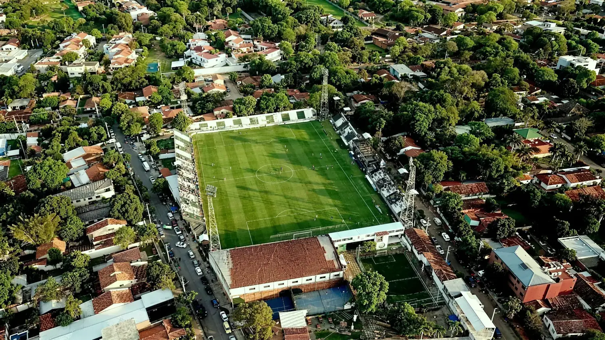
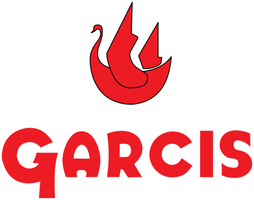
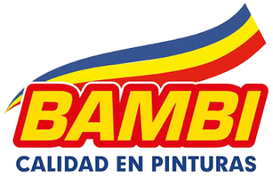
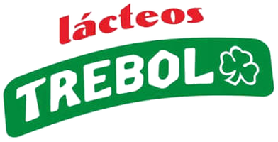

1913
La fundación
Un grupo de amigos funda el club el 24 de agosto en Santísima Trinidad y elige el blanco y el verde como colores.
Un club de barrio con más de un siglo de historia.
Rubio Ñu nació el 24 de agosto de 1913 en el barrio de Santísima Trinidad, Asunción, de la mano de un grupo de amigos que eligió el blanco y el verde como colores del club: blanco por la pureza, verde por la esperanza. Esa combinación le dio al club su apodo, albiverde.
En 1936, tras veintitrés años de historia, dos clubes del mismo barrio, Itá Ybaté y Flor de Mayo, se fusionaron con Rubio Ñu para mantenerlo con vida. Esa refundación marcó al club: volver siempre, incluso después de las bajas.
El club juega sus partidos como local en el Estadio La Arboleda, y sostiene su rivalidad histórica con Sportivo Trinidense en el Clásico de Trinidad. A sus jugadores e hinchas se los conoce como ñuenses.
Un club histórico de barrio que honra su resiliencia de más de cien años y que busca consolidarse como miembro permanente de la Primera División.
La misión del club es formar y exportar talento paraguayo y sudamericano, sosteniendo el crecimiento deportivo e institucional sin perder la identidad de Santísima Trinidad.
Un grupo de amigos funda el club el 24 de agosto en Santísima Trinidad y elige el blanco y el verde como colores.
Itá Ybaté y Flor de Mayo, dos clubes del mismo barrio, se fusionan con Rubio Ñu para mantenerlo con vida.
El club gana la segunda categoría del fútbol paraguayo y asciende a la División de Honor.
Rubio Ñu disputa el Apertura y el Clausura de la División de Honor.
La cancha del club, en el mismo barrio donde se fundó. Acá juega Rubio Ñu de local todas las fechas del torneo.

La nómina completa de la comisión directiva se publica en esta página.
SPONSORS


